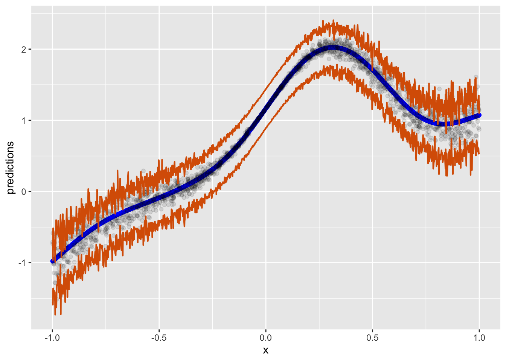

# Description of file here
if (!require("pacman")) install.packages("pacman")Loading required package: pacmanpacman::p_load(tidyverse, explore, tidylog, skimr, plotly,
performance, mgcv, quantregForest,
gridExtra)June 30, 2024
Loading required package: pacmanConformal prediction stands at the forefront of modern data analysis, offering a robust way to assess the reliability of predictive models. This technique is particularly valuable in scenarios where accurate and reliable predictions are crucial, such as in healthcare, finance, and various other business cases. In most real work cases, the error of any given model is not uniform or constant across the range of possible predictions. Therefore, it’s important to take this into account when using a model to predict.
Conformal prediction is notably non-parametric and distribution-free, meaning it is not constrained by the underlying distribution of your data. This characteristic lends it exceptional flexibility, making it applicable across various types of models. It is effective for both classification and regression problems, regardless of the specific model used.
Despite aligning with the frequentist perspective in quantifying uncertainty, conformal prediction provides a robust guarantee regarding the error bounds. It ensures that these bounds will encompass the true outcome within a specified confidence level. This makes it a reliable tool for making predictions with quantifiable certainty.
This post will cover a few different ways to compute prediction intervals.
Lets start by generating data often found in the real world. These data will produce a probability that ranges from 0 to 1. This will let me flip this to a classification problem later.
set.seed(123) # for reproducibility
# Simulating the dataset
n <- 10000 # number of observations
data <- tibble(
age = runif(n, 18, 70), # random ages between 18 and 70
income = runif(n, 30000, 100000), # random income between 30k and 100k
)
# Create a non-linear relationship for the target variable
sim_data <- data %>%
mutate(
purchase_likelihood = 0.5 * sin(age / 10) + 0.3 * log(income / 30000) + rnorm(n, 0, 0.2),
purchase = as.factor(ifelse(purchase_likelihood > 0.5, 1, 0)) # binary target variable
)Another way:
make_data <- function(n, base_std_dev = 1 / 2) {
tibble(x = runif(n, min = -2, max = 2)) %>% # Ensuring x ranges between -2 and 2
mutate(
y = (x^4) + 2 * exp(-7 * (x - 0.3)^2),
y = y + rnorm(n, sd = base_std_dev * (1 + abs(x^3))) # Varying std_dev with x
)
}
n <- 10000
set.seed(8383)
sim_data <- make_data(n)
sim_data %>%
ggplot(aes(x, y)) +
geom_point(alpha = 1 / 10)# This is from the tidymodels example here: https://www.tidymodels.org/learn/models/conformal-regression/
#
make_variable_data <- function(n, std_dev = 1 / 5) {
tibble(x = runif(n, min = -1)) %>%
mutate(
y = (x^3) + 2 * exp(-6 * (x - 0.3)^2),
y = y + rnorm(n, sd = std_dev * abs(x))
)
}
n <- 10000
set.seed(8383)
sim_data <- make_variable_data(n)
sim_data %>%
ggplot(aes(x, y)) +
geom_point(alpha = 1 / 10)Cool, let’s see how well a few simple models do.
But first, we must split it up:
This is important for common model performance checking, but also because we’ll need the validation set for conformal prediction later.
lm_mod <- lm(y ~ x, data = train)
spline_mod <- gam(y ~ s(x), data = train)
compare_performance(lm_mod, spline_mod)# Comparison of Model Performance Indices
Name | Model | AIC (weights) | AICc (weights) | BIC (weights) | R2 | RMSE | Sigma | R2 (adj.)
------------------------------------------------------------------------------------------------------------
lm_mod | lm | 9495.3 (<.001) | 9495.3 (<.001) | 9515.4 (<.001) | 0.642 | 0.534 | 0.534 | 0.642
spline_mod | gam | -8746.0 (>.999) | -8745.9 (>.999) | -8672.6 (>.999) | 0.983 | 0.117 | 0.117 | test_preds <- test %>%
mutate(lm_predictions = predict(lm_mod, newdata = .),
spline_predictions = predict(spline_mod, newdata = .))
lm_metrics <- test_preds %>%
yardstick::metrics(truth = y, estimate = lm_predictions) %>%
mutate(type = 'lm_metrics')
spline_metrics <- test_preds %>%
yardstick::metrics(truth = y, estimate = spline_predictions) %>%
mutate(type = 'spline_metrics')
perf <- bind_rows(lm_metrics, spline_metrics)
perf# A tibble: 6 × 4
.metric .estimator .estimate type
<chr> <chr> <dbl> <chr>
1 rmse standard 0.548 lm_metrics
2 rsq standard 0.624 lm_metrics
3 mae standard 0.444 lm_metrics
4 rmse standard 0.118 spline_metrics
5 rsq standard 0.983 spline_metrics
6 mae standard 0.0822 spline_metricsCool, let’s see how this looks over the range of test truth and estimates.
lm_plot <- test_preds %>%
ggplot(aes(x = x, y = lm_predictions)) +
geom_point() +
theme_minimal()
spline_plot <- test_preds %>%
ggplot(aes(x = x, y = spline_predictions)) +
geom_point() +
theme_minimal()
grid.arrange(lm_plot, spline_plot, ncol = 2)Ok, let’s build out the basic steps for conformal prediction:
Data Split: We’ve already done this earlier. The validation set, or calibration as some people call it, is important in this process. Make sure you have that.
Model Training: Train a model. In this case, we’ll train both the linear model and the GAM.
Conformity Measure: We’ll need to define a conformity measure. This is a function that essentially assigns a numerical score to each instance, which reflects how well the estimate ‘conforms’ to the other instances in the validation set. Typically this is just the ‘distance’ or error between your model’s prediction and the validation set. However, this could be anything for your specific problem.
Conformity Score: This is the computation of error given the measure in step 3.
Prediction: For any new instance that you’d like to predict, you use your model to run prediction and then we’ll move to compute a conformity score.
Confidence Level Determination: Given your new instances conformity score, we’ll now compare it to the distribution of scores derived from the validation set to determine the confidence level.
Output Prediction Intervals: We can then generate a prediction interval.
In its simplest form, conformal prediction is a statistical technique that provides a measure of certainty for machine learning model predictions by generating prediction intervals, using the conformity of new instances to a calibration set to indicate how likely these predictions are to be accurate. This method leverages the distribution of conformity scores from a calibration set to assess the reliability of predictions for new data.
Because we’ve already trained our two models, we now just need to leverage the validation set.
set.seed(123)
lm_validation_scores <- val %>%
mutate(
prediction = predict(lm_mod, .),
error = abs(y - prediction)
)
quant <- quantile(lm_validation_scores$error, probs = 0.95)
lm_validation_scores %>%
ggplot(aes(x = error)) +
geom_histogram() +
geom_vline(xintercept = quant)`stat_bin()` using `bins = 30`. Pick better value with `binwidth`.spline_validation_scores <- val %>%
mutate(
prediction = predict(spline_mod, .),
error = abs(y - prediction)
)
quant <- quantile(spline_validation_scores$error, probs = 0.95)
spline_validation_scores %>%
ggplot(aes(x = error)) +
geom_histogram() +
geom_vline(xintercept = quant)`stat_bin()` using `bins = 30`. Pick better value with `binwidth`.Now we can create a function that uses all the information we have to generate conformal intervals.
# Function to calculate the conformal prediction interval for new data without y values
conformal_interval <- function(new_data, model, calibration_set, alpha = 0.95) {
# Predict y values for the calibration set
validation_scores <- calibration_set %>%
mutate(
prediction = predict(model, .),
error = abs(y - prediction)
)
error_quantile <- quantile(validation_scores$error, probs = 0.95)
print(error_quantile)
# # Predict y values for the new data
new_preds <- new_data %>%
mutate(predictions = predict(model, .),
.lower = predictions - error_quantile,
.upper = predictions + error_quantile
)
}
lm_result <- conformal_interval(new_data = test, model = lm_mod, calibration_set = val, alpha = 0.05) 95%
0.9635453 # A tibble: 2,000 × 5
x y predictions .lower .upper
<dbl> <dbl> <dbl> <dbl> <dbl>
1 0.197 1.89 0.960 -0.00344 1.92
2 -0.265 0.164 0.389 -0.575 1.35
3 -0.523 -0.0874 0.0699 -0.894 1.03
4 0.845 1.10 1.76 0.799 2.73
5 0.0130 1.22 0.733 -0.231 1.70
6 -0.819 -0.679 -0.297 -1.26 0.667
7 -0.630 -0.261 -0.0630 -1.03 0.901
8 -0.560 -0.0740 0.0243 -0.939 0.988
9 -0.314 0.166 0.329 -0.635 1.29
10 -0.0195 1.08 0.693 -0.271 1.66
# ℹ 1,990 more rowsNot sure this viz is useful:
lm_result %>%
slice_sample(n = 100) %>%
ggplot(aes(x = y, y = predictions)) +
geom_point() +
geom_errorbar(aes(ymin = .lower, ymax = .upper), width = 0.1)slice_sample: removed 1,900 rows (95%), 100 rows remaininglm_result %>%
ggplot(aes(x = x, y = predictions)) +
geom_point(color = "black", size = 0.5) + # Adjust point color and size
geom_point(aes(x = x, y = y), color = 'green', size = 0.5) +
geom_errorbar(aes(ymin = .lower, ymax = .upper),
width = 0.2, # Adjust the width of the error bars
color = "grey", # Change color of error bars
alpha = 0.2
) + # Adjust transparency
ggtitle("Age vs Predictions with Conformal Prediction Intervals") + # Add a title
labs(x = "Age", y = "Predicted Value") + # Label the axes
theme_minimal() + # Apply a minimal theme
theme(
plot.title = element_text(hjust = 0.5), # Center the title
text = element_text(size = 12)
) # Adjust text sizeAs you can see, the relationship between age and the prediction is actually non-linear (as designed/simulated, in green), however, what is also obvious is that the error across the range of age is also not normal and changes as a function of the predictor.
So, given the modeled linear effect, this seem plausible.
Let’s take a look at the spline model.
spline_result <- conformal_interval(new_data = test, model = spline_mod, calibration_set = val, alpha = 0.05) 95%
0.2540535 Not sure this is useful:
spline_result %>%
# slice_sample(n = 100) %>%
ggplot(aes(x = y, y = predictions)) +
geom_point() +
geom_errorbar(aes(ymin = .lower, ymax = .upper), width = 0.1)spline_result %>%
slice_sample(n = 1000) %>%
ggplot(aes(x = x, y = predictions)) +
geom_point(color = "black", size = 0.5) + # Adjust point color and size
geom_point(aes(x = x, y = y), color = 'green', size = 0.5) +
geom_errorbar(aes(ymin = .lower, ymax = .upper),
width = 0.05, # Adjust the width of the error bars
color = "grey", # Change color of error bars
alpha = 0.2
) + # Adjust transparency
ggtitle("X vs Predictions with Conformal Prediction Intervals") + # Add a title
labs(x = "Age", y = "Predicted Value") + # Label the axes
theme_minimal() + # Apply a minimal theme
theme(
plot.title = element_text(hjust = 0.5), # Center the title
text = element_text(size = 12)
) # Adjust text sizeslice_sample: removed 1,000 rows (50%), 1,000 rows remainingspline_result %>%
slice_sample(n = 2000) %>%
ggplot(aes(x)) +
geom_point(aes(y = predictions), color = 'blue') +
geom_point(aes(y = y), alpha = 1/10) +
geom_ribbon(aes(ymin = .lower, ymax = .upper),
col = "#D95F02", linewidth = 3 / 4, fill = NA)slice_sample: no rows removedAlso plausible. But in truth, there is nothing super fancy about estimating error from the 95% quantile perspective. In other words, we assume that all the error for each point that could be predicted might be found in this span of error if we did this forever. Of course, this is a frequentist perspective. While I personally dont always ascribe to this perspective, I think it works fine. The only thing that is of issue here is that we obviously know there are some prediction values we can predict better than others simply given the data arrangement and how some multivariate combinations of predictors arrive at a stronger prediction.
conformal_quantile_intervals <- function(train_set, calib_set, new_data, alpha = 0.05) {
# Fit the quantile regression tree model
train_x <- train_set %>% select(-y)
train_y <- train_set %>% select(y) %>% pull()
qrf_model <- quantregForest(x = train_x,
y = train_y,
nthreads = 8)
# Determine the lower and upper quantiles
quantiles <- c(alpha/2, 1 - alpha/2)
# Predict quantiles on the calibration set
calib_pred <- predict(qrf_model, calib_set[, -ncol(calib_set)],
type = "quantiles", quantiles = quantiles)
# Compute conformity scores
lower_bound <- calib_pred[, 1]
upper_bound <- calib_pred[, 2]
calib_actual <- calib_set[, ncol(calib_set)]
conformity_scores <- pmax(lower_bound - calib_actual,
calib_actual - upper_bound)
# Calculate the quantile of the conformity scores
q_alpha <- quantile(conformity_scores$y, probs = 1 - alpha)
# Predict quantiles for new data
new_pred <- predict(qrf_model, new_data, type = "quantiles",
quantiles = quantiles)
# Adjust prediction intervals based on conformity scores
intervals <- cbind(new_pred[, 1] - q_alpha, new_pred[, 2] + q_alpha)
colnames(intervals) <- c("quant_lower", "quant_upper")
return(intervals)
}
conformal_quant_intervals <- conformal_quantile_intervals(
train_set = train,
calib_set = val,
new_data = test,
alpha = 0.05
)Let’s visualize this! For the predictions, we’ll just use the point predictions generated from the spline model… as it was the best looking.
conf_quant_int <- bind_cols(spline_result, conformal_quant_intervals)
conf_quant_int %>%
slice_sample(n = 1000) %>%
ggplot(aes(x = x, y = predictions)) +
geom_point(color = "black", size = 0.5) + # Adjust point color and size
geom_point(aes(x = x, y = y), color = 'green', size = 0.5) +
geom_errorbar(aes(ymin = quant_lower, ymax = quant_upper),
width = 0.05, # Adjust the width of the error bars
color = "grey", # Change color of error bars
alpha = 0.2
) + # Adjust transparency
ggtitle("X vs Predictions with Conformal Prediction Intervals") + # Add a title
labs(x = "x", y = "Predicted Value") + # Label the axes
theme_minimal() + # Apply a minimal theme
theme(
plot.title = element_text(hjust = 0.5), # Center the title
text = element_text(size = 12)
) # Adjust text sizeslice_sample: removed 1,000 rows (50%), 1,000 rows remainingAlternative visualization
conf_quant_int %>%
# slice_sample(n = 500) %>%
ggplot(aes(x)) +
geom_point(aes(y = predictions), color = 'blue') +
geom_point(aes(y = y), alpha = 1/10) +
geom_ribbon(aes(ymin = quant_lower, ymax = quant_upper),
col = "#D95F02", linewidth = 3 / 4, fill = NA)
This is a work in progress…
@online{l. debusk-lane2024,
author = {L. DeBusk-Lane, M.},
title = {Conformal {Prediction}},
date = {2024-06-30},
langid = {en}
}